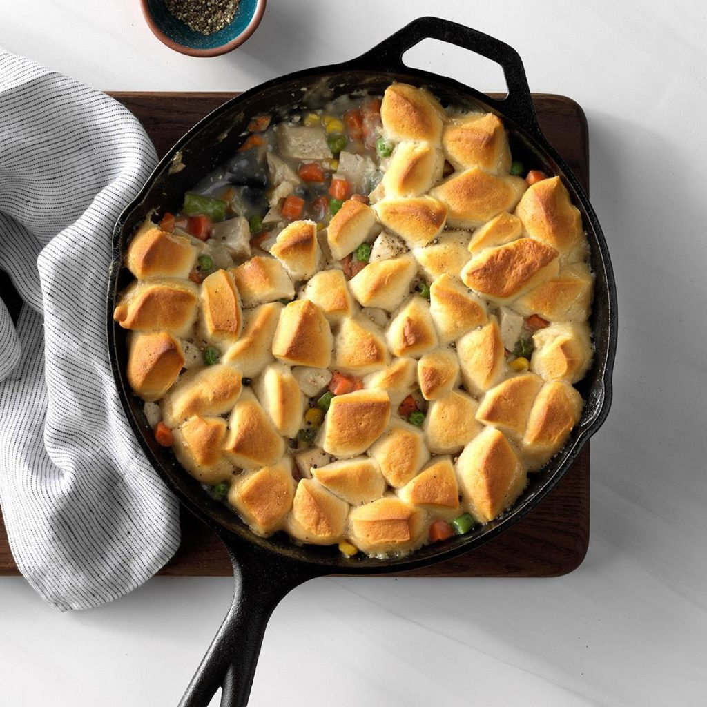

Turkey Biscuit Skillet
Ingredients
1 tablespoon butter
1/3 cup chopped onion
1/4 cup all-purpose flour
1 can (10-1/2 ounces) condensed chicken broth, undiluted
1/4 cup fat-free milk
1/8 teaspoon pepper
2 cups cubed cooked turkey breast
2 cups frozen peas and carrots (about 10 ounces), thawed
1 tube (12 ounces) refrigerated buttermilk biscuits, quartered
Directions
- Preheat oven to 400°. Melt butter in a 10-in. cast-iron or other ovenproof skillet over medium-high heat. Add onion; cook and stir until tender, 2-3 minutes.
- In a small bowl, mix flour, broth, milk and pepper until smooth; stir into pan. Bring to a boil, stirring constantly; cook and stir until thickened, 1-2 minutes. Add the turkey and frozen vegetables; heat through. Arrange biscuits over stew. Bake until biscuits are golden brown, 15-20 minutes.
Nutrition Facts
1 serving: 319 calories, 10g fat (4g saturated fat), 43mg cholesterol, 878mg sodium, 36g carbohydrate (4g sugars, 2g fiber), 22g protein.
Total Time
Prep/Total Time: 30 min.